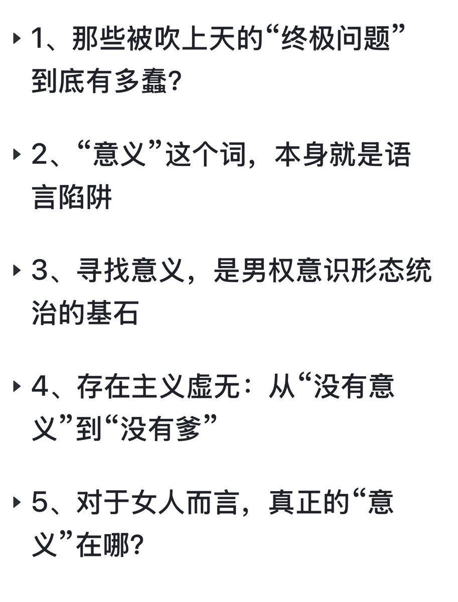
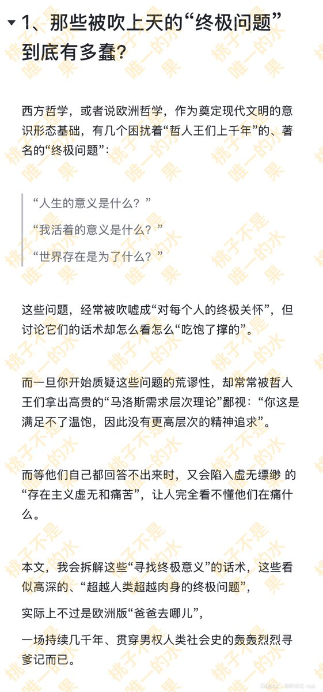
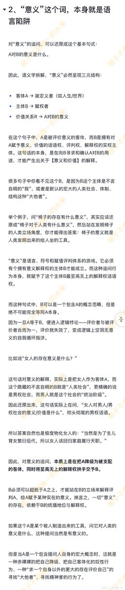
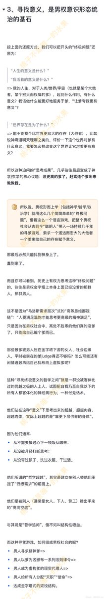
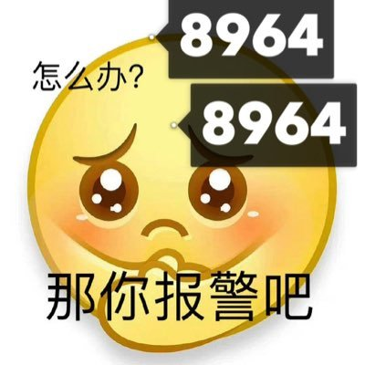

時璃風医詩🍥🌈
@hagishigure
無論是尋找意義，還是你的推理本身就是父權話語下的預定結構。
為什麼非得什麼都得找一個答案？答案本身就是不存在意義的。
存在主義的意義就是證明「宇宙就是存在，沒有意義」，幻想需要意義的人和幻想需要意義需要尋找意義的人都很父權。
任何沒有自涉性的哲學都是父權思考。父權強調二元結構。如果我不說這最后一句話我最後的總結本質上也是不存在自涉性的，但現在存在了。





桃子不是唯一的水果
@pitchpit8964
标题：“寻找意义”是男权哲学的缺爹焦虑
大纲：
1、那些被吹上天的“终极问题”到底有多蠢？
2、“意义”这个词，本身就是语言陷阱
3、寻找意义，是男权意识形态统治的基石
4、存在主义虚无：从“没有意义”到“没有爹”
5、对于女人而言，真正的“意义”在哪？
1/2 https://t.co/NjuOqcNDJU